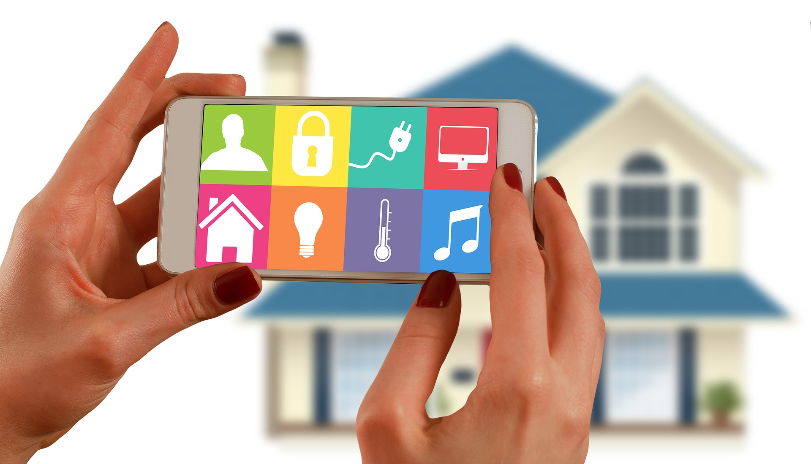

¿Qué es?
Una casa inteligente es aquella que brinda a sus propietarios confort, seguridad, eficiencia energética y comodidad en todo momento.
En una casa inteligente los electrodomésticos y los sistemas de climatización, ventilación, iluminación, además de los sistemas de audio y vídeo o los de seguridad se pueden comunicar entre sí y pueden ser controlados de forma remota desde cualquier lugar con casi cualquier dispositivo conectado a internet.
Estos sistemas domóticos integrados, junto a otros dispositivos de medición y control como sensores de humedad, sondas de calidad del aire, etc. pueden convertir nuestra vivienda en un hogar digital preparado para contribuir a la conservación de los recursos limitados de nuestro planeta controlando el consumo de los sistemas de climatización, iluminación e incluso del consumo de agua.
En la actualidad, muchos de los controladores domésticos tienen sistemas de monitoreo incorporados mediante los cuales calculan y registran el uso de todos los dispositivos conectados, lo que proporciona al propietario de la vivienda un mayor conocimiento e información para realizar cambios en función de las necesidades de cada momento.